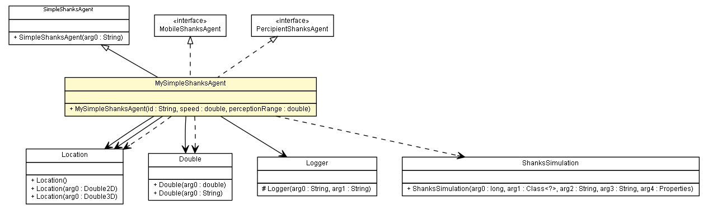

es.upm.dit.gsi.shanks.agent.test
Class MySimpleShanksAgent

java.lang.Object
 es.upm.dit.gsi.shanks.agent.SimpleShanksAgent
es.upm.dit.gsi.shanks.agent.test.MySimpleShanksAgent
es.upm.dit.gsi.shanks.agent.SimpleShanksAgent
es.upm.dit.gsi.shanks.agent.test.MySimpleShanksAgent
- All Implemented Interfaces:
- MobileShanksAgent, PercipientShanksAgent, ShanksAgent, Serializable, sim.engine.Steppable, sim.engine.Stoppable
public class MySimpleShanksAgent
- extends SimpleShanksAgent
- implements MobileShanksAgent, PercipientShanksAgent
- Author:
- a.carrera
- See Also:
- Serialized Form
| Methods inherited from class java.lang.Object |
clone, equals, finalize, getClass, hashCode, notify, notifyAll, toString, wait, wait, wait |
MySimpleShanksAgent
public MySimpleShanksAgent(String id,
double speed,
double perceptionRange)
hasBeenNearToSomething
public boolean hasBeenNearToSomething()
checkMail
public void checkMail()
- Specified by:
checkMail in interface ShanksAgent
executeReasoningCycle
public void executeReasoningCycle(ShanksSimulation simulation)
- Specified by:
executeReasoningCycle in class SimpleShanksAgent
getPerceptionRange
public double getPerceptionRange()
- Specified by:
getPerceptionRange in interface PercipientShanksAgent
setSpeed
public void setSpeed(Double speed)
- Specified by:
setSpeed in interface MobileShanksAgent
getSpeed
public double getSpeed()
- Specified by:
getSpeed in interface MobileShanksAgent
stopMovement
public void stopMovement()
- Specified by:
stopMovement in interface MobileShanksAgent
startMovement
public void startMovement()
- Specified by:
startMovement in interface MobileShanksAgent
isAllowedToMove
public boolean isAllowedToMove()
- Specified by:
isAllowedToMove in interface MobileShanksAgent
getCurrentLocation
public Location getCurrentLocation()
- Specified by:
getCurrentLocation in interface MobileShanksAgent- Specified by:
getCurrentLocation in interface PercipientShanksAgent
getTargetLocation
public Location getTargetLocation()
- Specified by:
getTargetLocation in interface MobileShanksAgent
setCurrentLocation
public void setCurrentLocation(Location location)
- Specified by:
setCurrentLocation in interface MobileShanksAgent
setTargetLocation
public void setTargetLocation(Location location)
- Specified by:
setTargetLocation in interface MobileShanksAgent
Copyright © 2011-2013 Grupo de Sistemas Inteligentes - Universidad Politécnica de Madrid. All Rights Reserved.